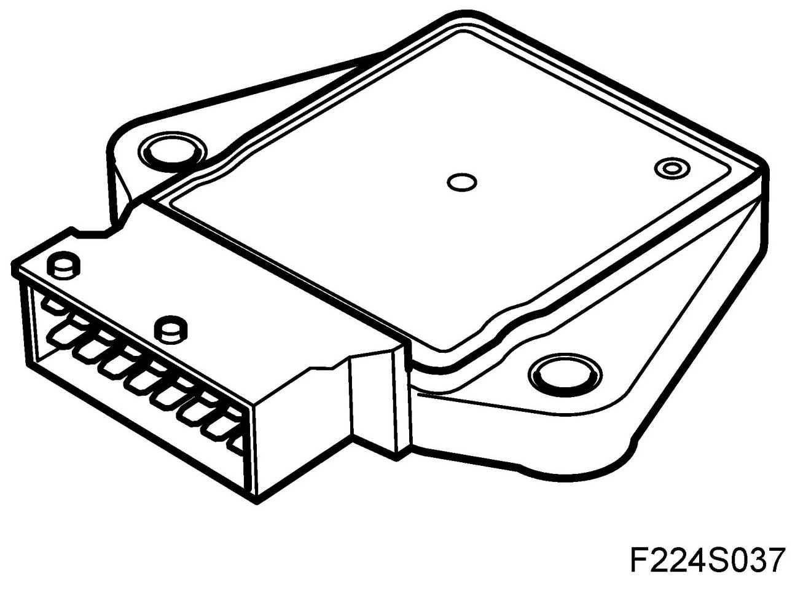
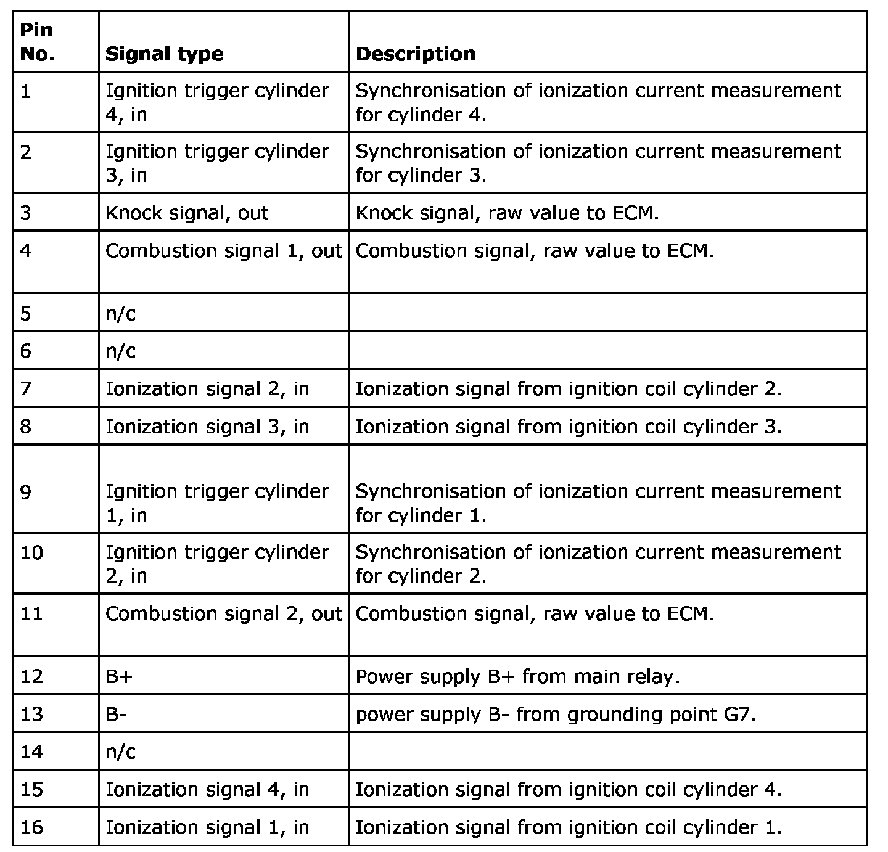
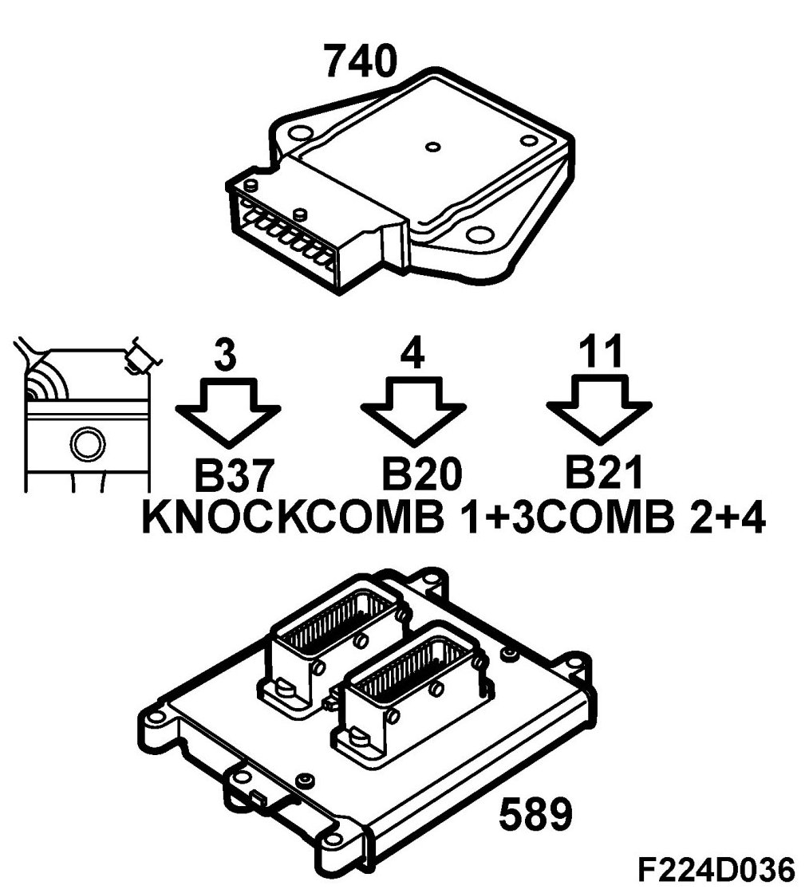
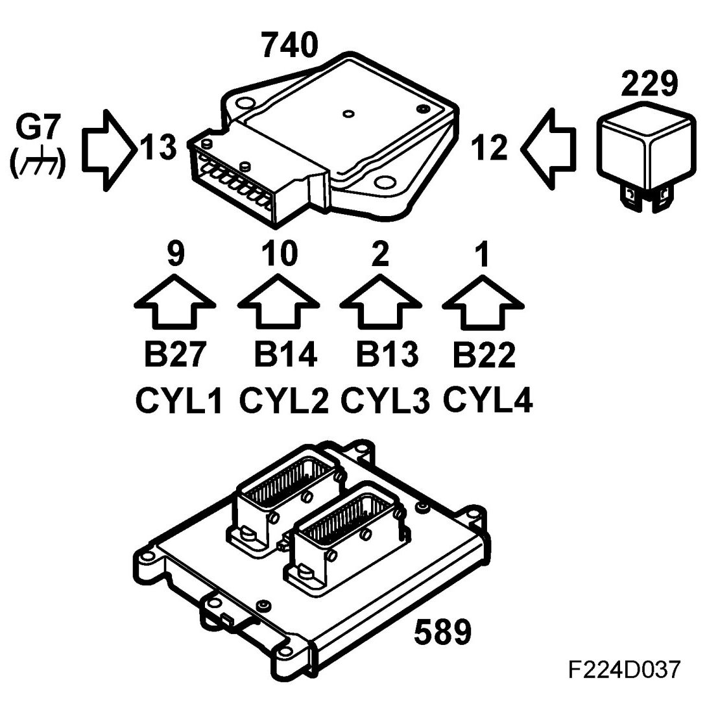
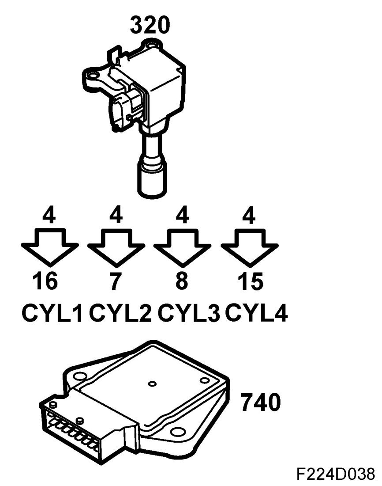
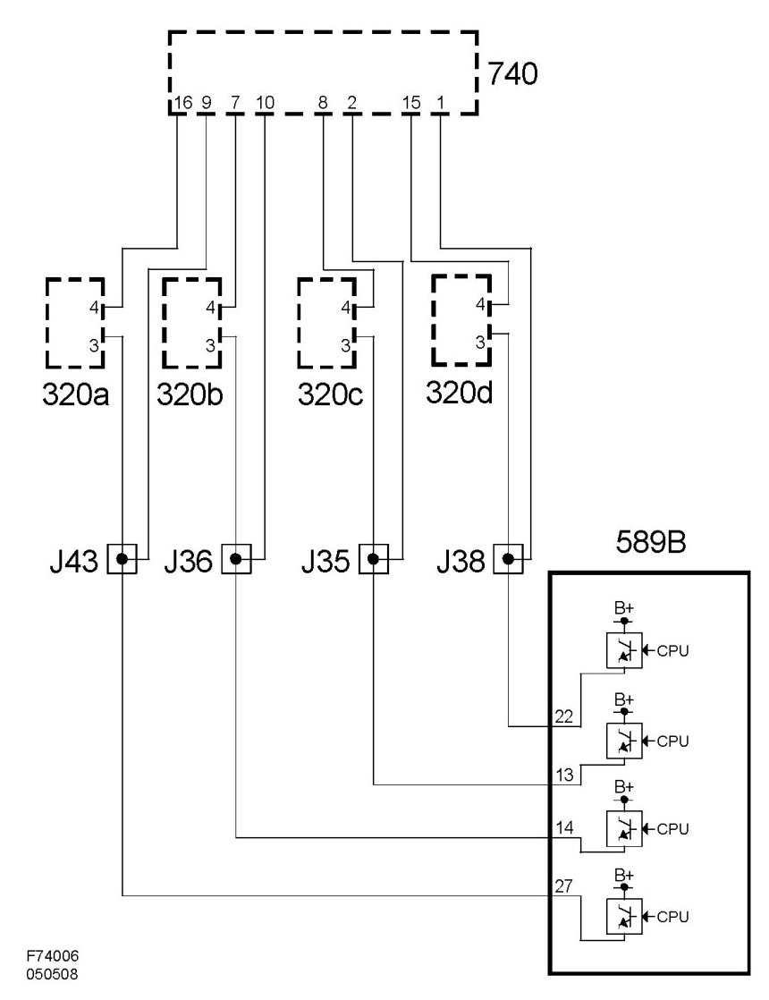
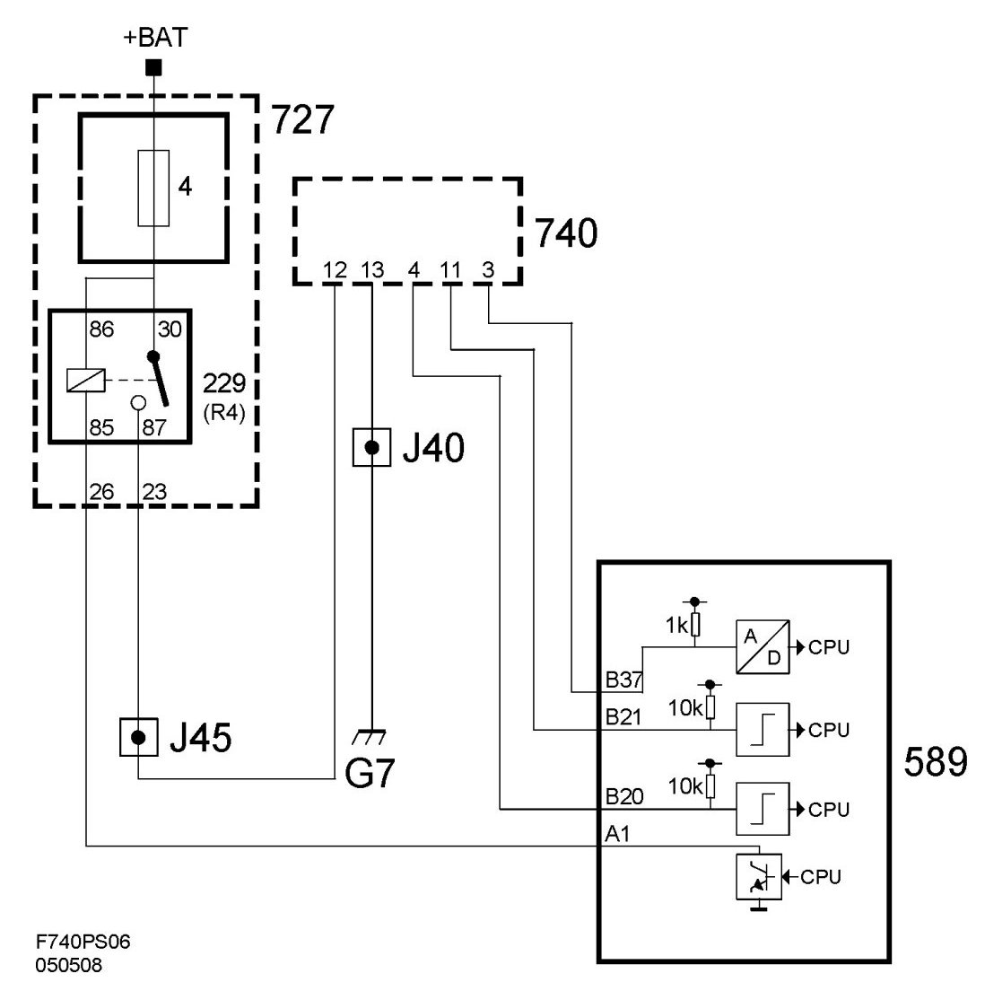

Ignition Control Module: Description and Operation
Ionization Detection Module (740)
Location
Ionization Detection Module (740)
Main task
The CDM does an initial signal processing of the ionization signals from each ignition coil. The CDM transmits three signals to the ECM:
- Knock signal
- Combustion signal 1 (cylinders 1 and 3)
- Combustion signal 2 (cylinders 2 and 4)
These signals are used for knock control, synchronisation of ignition timing/fuel injection and for misfire detection.
Type
The digital unit which does an initial processing of the ionization signals.

NOTE: The CDM incorporates digital signal processing. It can not be used on vehicles of an earlier model year because they use analogue signal processing. In order to prevent any interchanging, the connectors are different.
Connection




CDM performs an initial processing of the ionization signal from each ignition coil. CDM generates a common knock signal from the ionization information of the four cylinders. This signal is used by ECM to evaluate engine knocks.
After the spark has been fired, ECM "listens" to the knock signal of each cylinder over a certain number of crankshaft degrees, known as "windows".
The ionization signal is bandpass filtered to filter out the part of the signal containing knock information.
Knock information is characterised by "ringings" which are oscillations in the ionization signal. To obtain the combustion signal, the ionization signal passes a low-pass filter, where relatively slower oscillations pass through.
These ionization signal oscillations make up the part containing information on combustion quality.
Wiring diagram, ignition coils

Wiring diagram, power supply and communication
